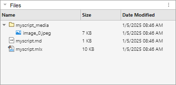

export
Description
path = export( converts the specified
live script or function to a PDF file with the same name and returns the full path to the
converted file. The converted file closely resembles the appearance of the live script or
function when viewed in the Live Editor with output inline. If the live script contains
controls or tasks, the Live Editor saves them as code in the converted file.file)
This syntax saves the converted file to the current folder. By default,
export uses the values specified by the matlab.editor export settings when creating the converted file.
path = export(
specifies the filename and location for the converted file. If
file,outputfile)outputfile includes a file extension, the export
function converts the live script or function to that format.
path = export(___,
specifies options for customizing the converted file by using one or more name-value
arguments in addition to the input argument combinations in previous syntaxes. For example,
you can convert the specified file to a Microsoft® Word document instead of a PDF file, specify whether to hide code, or adjust the
paper size and page orientation of the converted file. Name=Value)
Examples
Convert a live script to a PDF file including the code, output, and formatted text, and save it in the current folder.
export("myscript.mlx")ans =
'C:\myfiles\myscript.pdf'Convert a live script to a Microsoft Word document including the code, output, and formatted text.
wordfile = export("myscripts\myscript.mlx","myconvertedfiles\livescripts\myscript.docx")
wordfile =
'C:\myfiles\myconvertedfiles\livescripts\myscript.docx'Convert a live script to a Markdown file, first without and then with embedded images and figures.
Convert myscript.mlx to a Markdown file. By default, images and
figures are not embedded in the Markdown file. MATLAB® creates the Markdown file and a folder named
myscript_media containing the images and figures generated from the
live script.
mdfile = export("myscript.mlx",Format="markdown")
mdfile =
'C:\myfiles\myscript.md'
Convert myscript.mlx to a Markdown file that includes HTML markup
and embedded images and figures. This customization is useful when the application in
which you plan to use the converted file supports HTML markup and embedded images and
figures.
mdfile = export("myscript.mlx",Format="markdown",EmbedImages=true, ... AcceptHTML=true)
mdfile =
'C:\myfiles\myscript.md'Use name-value arguments to hide the code and change the page size and orientation of the converted file.
wordfile = export("myscript.mlx","C:\Work\myfiles\myscript.docx", ... HideCode=true,PageSize="A4",Orientation="Landscape")
wordfile =
'C:\Work\myfiles\myscript.docx'Input Arguments
Name of the live script or function to convert, specified as a string scalar or
character vector. Specify file as an absolute or relative path. If
file is not on the MATLAB path, include the extension.
Name of the converted file, specified as a string scalar or character vector.
Specify outputfile as an absolute or relative path. The destination
folder specified by outputfile must exist and be writable.
export uses the file extension of
outputfile to determine the format of the converted file. For
example, if outputfile has a .docx extension,
export converts the live script or function to a Microsoft Word document.
Name-Value Arguments
Specify optional pairs of arguments as
Name1=Value1,...,NameN=ValueN, where Name is
the argument name and Value is the corresponding value.
Name-value arguments must appear after other arguments, but the order of the
pairs does not matter.
Example: path =
export("myfiles/mylivescript.mlx",Format="docx")
Output Options
Output format, specified as one of the values in the table.
| Value | Output Format | Default File Extension |
|---|---|---|
"pdf" (default) | Portable Document Format (PDF) | .pdf |
"html" | Hypertext Markup Language | .html |
"docx" | Microsoft Word document | .docx |
"latex" | LaTeX | .tex |
"m" | MATLAB code file | .m |
"markdown" (since R2023b) | Markdown file | .md |
"ipynb" (since R2023b) | Jupyter® notebook | .ipynb |
Format takes precedence over the format specified
by outputfile. If outputfile does not
include a file extension, export uses the default file extension
for the specified Format.
When exporting to LaTeX, MATLAB creates a separate matlab.sty file in the same folder
as the output document, if one does not exist already. STY files, also known as LaTeX
Style documents, give you more control over the appearance of the output
document.
Example: path =
export("myfiles/mylivescript.mlx","myfiles/outfile.xml",Format="html")
creates an HTML file with a .xml extension.
Whether to open the converted file after creating it, specified as a numeric or
logical 0 (false) or 1
(true).
Example: path =
export("myfiles/mylivescript.mlx",OpenExportedFile=true)
Page size of the converted file, specified as one of the standard paper type values in this table.
Value | Paper Size (Width-by- Height) |
|---|---|
| 8.5-by-11 in (default in US) |
| 8.5-by-14 in |
| 11-by-17 in |
| 42-by-59.4 cm |
| 29.7-by-42 cm |
| 21-by-29.7 cm (default in Europe and Asia) |
| 14.8-by-21 cm |
This option is available only when converting to a Microsoft Word document, PDF file, or LaTeX file.
Example: path =
export("myfiles/mylivescript.mlx",PageSize="Legal")
Page orientation of the converted file, specified as "Portrait"
or "Landscape".
This option is available only when converting to a Microsoft Word document, PDF file, or LaTeX file.
Example: path =
export("myfiles/mylivescript.mlx",Orientation="Landscape")
Document margins of the converted file, specified as a 1-by-4 vector of margin
values with the format [left
top
right
bottom]. Each margin value is specified in points as a
positive integer between 0 and 255. A value of 72 points is equivalent to 1 inch or
2.54 cm.
This option is available only when converting to a Microsoft Word document, PDF file, or LaTeX file.
Example: path = export("myfiles/mylivescript.mlx",Margins=[25 72 72
25])
Since R2023b
Whether to include outputs in the converted file, specified as a numeric or
logical 1 (true) or 0
(false).
This option is available only when converting to a Markdown file or Jupyter notebook.
Example: path =
export("myfiles/mylivescript.mlx","mylivescript.md",IncludeOutputs=false)
Code Options
Whether to run the code and include the output in the converted file, specified as
a numeric or logical 0 (false) or
1 (true).
Running export with Run set to
true is not supported in the Live Editor. To run
export with Run set to
true, use the Command Window or Editor.
Example: path =
export("myfiles/mylivescript.mlx",Run=true)
Whether to catch errors when running the live script or function during
conversion, specified as a numeric or logical 1
(true) or 0 (false). If
CatchError is true and an error occurs,
export includes the error in the converted file. If
CatchError is false and an error occurs,
export displays the error in the Command Window and does not
create a converted file.
Example: path =
export("myfiles/mylivescript.mlx",CatchError=false)
Whether to hide the code, specified as a numeric or logical 1
(true) or 0 (false). If
HideCode is true, the code in the live
script or function is hidden (not included) in the converted file. If
HideCode is false, the code is included. If
this option is not specified, export uses the current saved state
of the live script or function to determine whether to hide the code in the converted
file. For example, if the specified live script or function was last saved with the
code hidden, then the code is also hidden in the converted file.
Note
When exporting to PDF, Microsoft Word, HTML, LaTeX, Markdown, or Jupyter notebooks, the Live Editor saves controls and tasks as code. If you have a live script that contains controls and tasks and you hide the code before exporting, the converted file does not contain the controls or tasks.
Example: path =
export("myfiles/mylivescript.mlx",HideCode=false)
Since R2023b
Programming language of the code to be converted, specified as a string scalar or
character vector. Supported languages include "matlab" and
"python".
This option is available only when converting to a Markdown file or Jupyter notebook.
Example: path =
export("myfiles/mylivescript.mlx","mylivescript.md",ProgrammingLanguage="python")
Since R2023b
Whether to include HTML in the converted file, specified as a numeric or logical
0 (false) or 1
(true). Set AcceptHTML to
1 or true if the application in which you plan
to use the converted file supports HTML. If AcceptHTML is
0 or false, the color of titles, the alignment
of images, and the size of images and figures are not preserved in the converted
file.
This option is available only when converting to a Markdown file.
Example: path =
export("myfiles/mylivescript.mlx","mylivescript.md",AcceptHTML=true)
Since R2023b
Whether to render LaTeX markup using an external online service, specified as one of these options:
"off"(default) — Do not render LaTeX and TeX markup. Many Markdown renderers can natively render LaTeX and TeX markup, so theexportfunction does not need to render the markup."svg"— Use an external online service to render LaTeX and TeX markup and generate SVG images of the rendered markup."png"— Use an external online service to render LaTeX and TeX markup and generate PNG images of the rendered markup."jpeg"— Use an external online service to render LaTeX and TeX markup and generate JPEG images of the rendered markup.
If you set RenderLaTeXOnline to "svg",
"png", or "jpeg", then you must set
AcceptHTML to true so that the
export function can insert the generated images into the
converted file.
This option is available only when converting to a Markdown file.
Note
By default, export does not use an external online service
to render LaTeX markup. If you specify RenderLaTeXOnline as
"svg", "png", or "jpeg",
then export uses the https://latex.codecogs.com/ external online service to
render your LaTeX markup.
Example: path =
export("myfiles/mylivescript.mlx","mylivescript.md",RenderLaTeXOnline="svg")
Media Options
Figure format of output figures in the converted file, specified as
"png", "jpeg", "bmp",
"svg", "eps", or "pdf". By
default, the value of this name-value argument for PDF files, Markdown files, and
Jupyter notebooks is "png". For LaTeX files, the default
value is "eps".
This option is available only when converting to a PDF file, LaTeX file, Markdown
file, or Jupyter notebook. In addition, the Run name-value argument
must be true for this option to have an effect.
Example: path =
export("myfiles/mylivescript.mlx",Run=true,FigureFormat="jpeg")
Figure resolution of output figures in the converted file, specified in DPI as a positive integer between 36 and 2880.
This option is available only when converting to a PDF file, LaTeX file, Markdown
file, or Jupyter notebook. In addition, the Run name-value argument
must be true for this option to have an effect.
Example: path =
export("myfiles/mylivescript.mlx",Run=true,FigureResolution=800)
Since R2023b
Whether to embed images and figures in the converted file, specified as a numeric
or logical 0 (false) or 1
(true). If EmbedImages is
true, images and figures are stored in the converted file. If
EmbedImages is false, images and figures are
stored in a separate folder. This folder is located in the same folder as the
converted file, and the folder name is the name of the file to convert with
"_media" appended to it.
This option is available only when converting to a Markdown file or Jupyter notebook.
Example: path =
export("myfiles/mylivescript.mlx","mylivescript.md",EmbedImages=true)
Since R2023b
Whether to export figure animations as videos, specified as a numeric or logical
0 (false) or 1
(true). If GenerateFigureAnimationVideo is
true, you also must specify a value for
FigureAnimationVideoFormat.
This option is available only when converting to an HTML file, and only on Windows® and macOS systems.
Example: path =
export("myfiles/mylivescript.mlx","mylivescript.html",GenerateFigureAnimationVideo=true,FigureAnimationVideoFormat="MPEG-4")
Since R2023b
Format of generated video, specified as "MPEG-4". You must set
GenerateFigureAnimationVideo to true for
this option to have an effect.
This option is available only when converting to an HTML file, and only on Windows and macOS systems.
Example: path =
export("myfiles/mylivescript.mlx","mylivescript.html",GenerateFigureAnimationVideo=true,FigureAnimationVideoFormat="MPEG-4")
Since R2023b
Location for saving generated videos, specified as a string scalar or character
vector. Specify MediaLocation as an absolute or relative path. If
you do not specify MediaLocation, export
saves generated videos to a folder named
file_mediafile
This option is available only when converting to an HTML file, LaTeX file, Markdown file or Jupyter notebook, and only on Windows and macOS systems.
Example: path =
export("myfiles/mylivescript.mlx","mylivescript.html",GenerateFigureAnimationVideo=true,FigureAnimationVideoFormat="MPEG-4",MediaLocation="myfiles/mymedia")
Version History
Introduced in R2022aThe default value of the AcceptHTML and
EmbedImages name-value arguments is now false or
0. Previously, the default value of these name-value arguments was
true or 1. Set AcceptHTML to
true to include HTML markup when converting to Markdown files. Set
EmbedImages to true to embed images and figures
when converting to Markdown files or Jupyter notebooks.
You can save figure animations as videos when exporting to HTML by using the
GenerateFigureAnimationVideo,
FigureAnimationVideoFormat, and MediaLocation
name-value arguments. Saving figure animations as videos is supported only on Windows and macOS systems.
For example, convert the live script mylivescript.mlx to HTML and
save the figure animations generated by mylivescript.mlx as MPEG-4
videos.
path = export("myfiles/mylivescript.mlx","mylivescript.html", ... GenerateFigureAnimationVideo=true,FigureAnimationVideoFormat="MPEG-4", ... MediaLocation="myfiles/mymedia")
You can convert live scripts and functions to Markdown files and Jupyter notebooks by specifying an output filename with a .md or
.ipynb extension. Alternatively, you can set the
Format name-value argument to "markdown" or
"ipynb".
For example, convert the live script penny.mlx to a Markdown file and
a Jupyter
notebook.
export("penny.mlx","penny.md") export("penny.mlx","penny.ipynb")